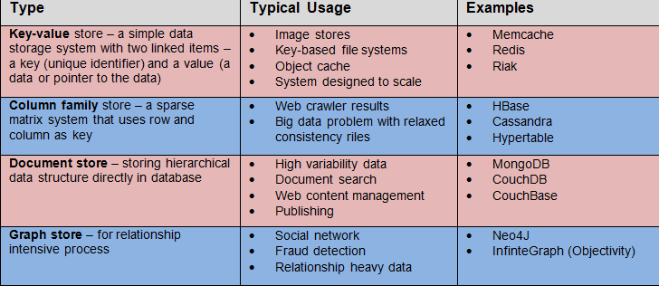

NoSQL Databases
Not Only SQL Databases
June 21, 2015
Sometimes relational databases are too complex or unsuitable for given website. Another object a developer can look into is NoSQL databases which include a variety of flavors. Overall, these databases provide a simpler design, horizontal scaling (e.g., scaling from one web server to three), and more granular control over availability. NoSQL databases are increasingly common in real-time web development where the consumer expects real-time feeds instead of periodic updates.
At a high level there are 4 flavors of NoSQL databases:

The table below summarizes the performances of different flavor:
| Data Model | Performances | Scalability | Flexibility | Complexity |
| Key-Value | high | high | high | none |
| Column | high | high | moderate | low |
| Document | high | variable(high) | high | low |
| Graph | variable | variable | high | high |
| Relational | variable | variable | low | moderate |
Latest Tweet
tweet tweet
Social
FB Twitter GitHub LinkedIn Google+